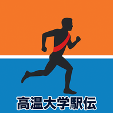

下の動画のように、Safariの共有アイコンから簡単にホーム画面にアプリを追加できます！インストール後、通知を許可すると、iPhoneへ毎日9時から18時までの一時間毎に、速報が通知されます。Androidも同様に通知されますのでご自身で設定してみてください。
💡 グラフ上部の大学名をクリックすると、そのチームの推移をハイライト表示できます。もう一度クリックすると元に戻ります。
対象の大学を選択し、各校の詳細なデータを確認します。